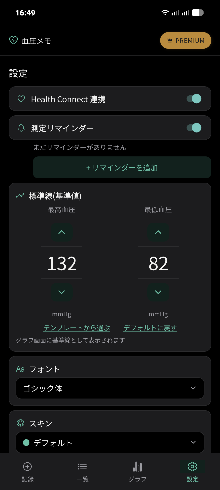
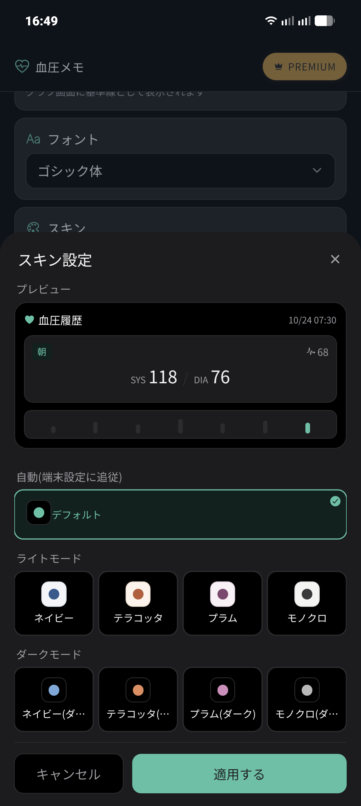
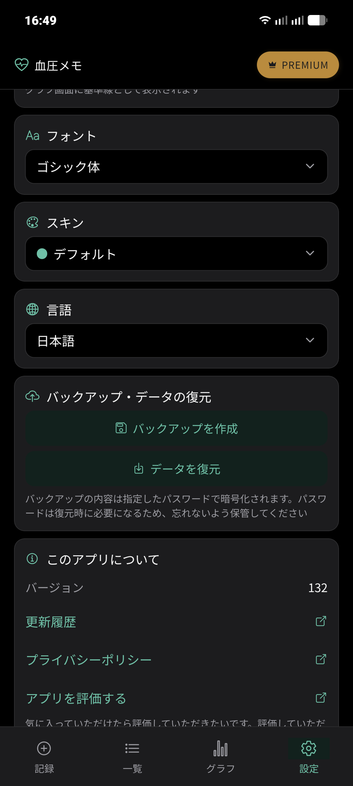

📖 はじめに（この画面でできること）
画面下部の「設定」タブでは、アプリの動作設定や見た目のカスタマイズ、外部アプリ連携、データの保護・バックアップなど、重要な設定をまとめて行えます。
🛠️ 詳しい操作手順
STEP 1
標準線（基準値）の設定
「標準線（基準値）」は、血圧レベル判定の色分けや、グラフ画面の破線として表示される目標値です。
- 最高血圧 / 最低血圧の数値変更: 「∧」「∨」ボタンで1mmHg単位で数値を調整できます。
- テンプレートから選ぶ: 年代別の平均値などのテンプレートからワンタップで選択できます。
- デフォルトに戻す: 初期設定値（最高115 / 最低68mmHg）にいつでもリセットできます。

標準線やHealth Connect連携スイッチが並ぶ設定画面上部
STEP 2
スキン（配色テーマ）の変更
「スキン」項目をタップすると、スキン設定シートが開きます。
- 自動（端末設定に追従）: スマートフォン本体のライト/ダーク設定に合わせて自動で切り替わります（デフォルト）。
- ライトモード: 「ネイビー」「テラコッタ」「プラム」「モノクロ」の明るいテーマ。
- ダークモード: 「ネイビー（ダーク）」「テラコッタ（ダーク）」「プラム（ダーク）」「モノクロ（ダーク）」の落ち着いた暗色テーマ。
シート上部でカードや文字色のプレビューを確認し、「適用する」を押すとアプリ全体のテーマが一新されます。

好みに合わせて選べる全9種類のスキン配色プレビュー
STEP 3
フォント・言語の変更
- フォント: 「ゴシック体」をはじめとする全9種類のフォントから好みの書体を選択できます。
- 言語: 日本語のほか、英語、ドイツ語、フランス語、スペイン語など全12言語に対応しています。いつでも自由に言語を切り替えられます。
STEP 4
暗号化バックアップとデータの復元
大切な健康データを守るため、バックアップ機能が備わっています。
- バックアップを作成: 指定したパスワードで記録データが強力に暗号化され、バックアップファイルとして端末やクラウドストレージに保存されます。
- データを復元: 保存したバックアップファイルを選択し、パスワードを入力することで以前の測定データを安全に復元できます。
🔒 暗号化パスワードの保管
バックアップはパスワードで保護されているため、復元時にパスワードが一致しないとデータを取り出せません。忘れないよう厳重に保管してください。

バックアップ作成・復元ボタンが配置された設定画面下部
❓ 設定についてのよくある質問
Q 標準線を変えると過去の記録の色分けも変わりますか？
はい、設定した標準線をもとに一覧やカレンダーヒートマップの色分けが動的に再計算されるため、いつでも新しい基準値で過去の推移を振り返ることができます。
Q Health Connect連携をオフにすると、過去に同期したデータはどうなりますか？
血圧メモ内の連携スイッチをオフにしても、すでにHealth Connectに保存された過去のデータは削除されません。次回以降の自動同期のみが停止します。